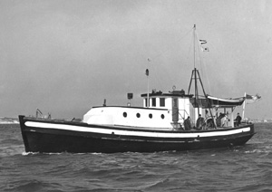

|  copyright - WHOI |
|
Balanus was used during the war years as a harbor transport.
WHOI purchased the vessel in 1946 from Vita Lo Piccola of Boston for use
primarily in coastal waters. Balanus made 26 cruises. Her work was
mainly for physical oceanography, but also included plankton tows, camera
work, instrumentation tests and current measurements. Balanus was
sold in 1950 to D.L. Edgerton, a MD fisherman.